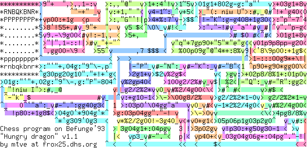
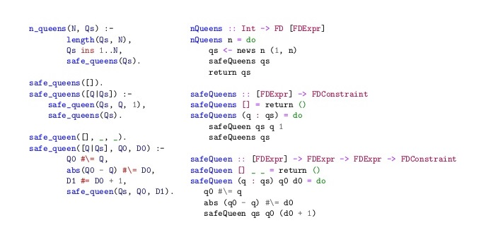
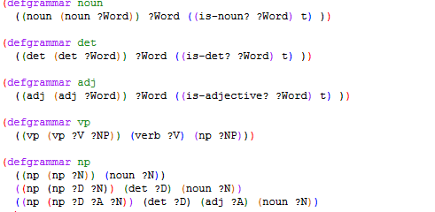
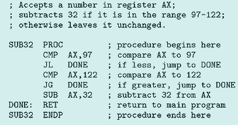
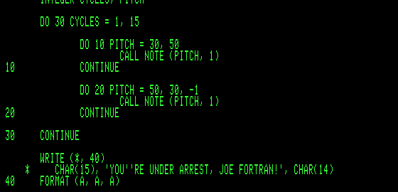

- ↪limbaje ezoterice, ex. Befunge
- 
- ↪limbaje procedurale, ex. C
- ↪limbaje funcționale, ex. Haskell
- 
- ↪limbaje mixte, ex. LISP oferă un amestec heteroclit și netipizat de programare imperativă și programare funcțională
- 
- ↪limbaje de generația întâia: limbajele cod-mașină (limbaje mașină)

- ↪limbaje de generația a doua: limbajele de asamblare
- 
- ↪limbaje de generația a treia: limbaje de nivel înalt, cum ar fi C-ul (și toate derivatele sale: C++, Java, ...), Pascal, Fortran ș.a.
- ↪limbaje de generația a patra: limbajele neprocedurale, orientate pe rezolvarea unei anumite clase de probleme: SQL ș.a.
- ↪limbaje de generația a cincea: limbaje utilizate în domenii precum logica fuzzy, inteligența artificială sau și rețelele neuronale: Prolog, LISP ș.a.
- ↪Limbaje din secolul XX; ex. LISP și FORTRAN din anii '50
- 
- ↪Limbaje din ultimul deceniu al secolului XX până în prezent, ex. Haskell, Ruby, Rust